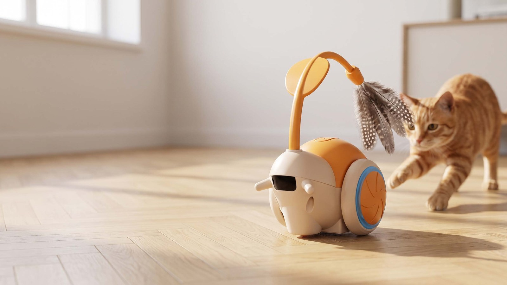
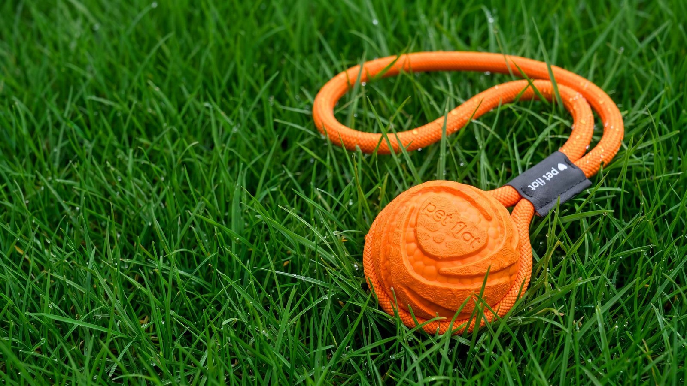

magic mouse
Почти, как настоящая! Интерактивная игрушка, которая имитирует поведение настоящей мыши, вызывая у питомца азарт и интерес. Она ускоряется, замедляется, делает повороты и остановки. Такое поведение стимулирует охотничьи инстинкты и увлекает кошку в активную игру.

magic tail
Одна из бестселлеров в нашей линейке игрушек. Базовый минимум: увлекающий гибкий бархатный хвост с перьями хаотично виляет по полу, привлекая внимание даже самых избалованных.

magic twins
Эти близнецы произвели фурор – 2 в 1! Оценили игрушку самые активные котики – не каждый угонится за твинсами! Полюбили их за наше внимание к деталям и качеству – здорово, когда наши вкусы сходятся.

magic snail
Младший брат magic mouse! Неожиданные смены направления, повороты, паузы и ускорения делают поведение игрушки непредсказуемым и интересным для кошки. Идеальный способ отвлечь кошку от мебели и проводов. Безопасно, автономно и без лишних хлопот!

magic spin
Это прятки в лучшем исполнении, уникальном дизайне и качестве. Кажется, уже не нуждается в представлении! Кошки обожают охотиться, прятаться и подкарауливать движущиеся объекты. Она создана, чтобы дарить кошке настоящую охоту – каждый день.

magic box
Кошки обожают следить, ловить и подкарауливать. Игрушка имитирует поведение птички, которая выскакивает из отверстий по случайному сценарию. Кошка не может предсказать, где появится добыча в следующий раз. Она замирает, наблюдает, охотится – как в дикой природе. Перья крутятся снизу – двойная игра!

magic ring
Буквально – ринг с добычей! 4 основания, которые можно сочетать между собой, формируя ринг, по которому, меняя направление, бегает пушистая приманка. Меняйте скорость с помощью панели на игрушке или пультом управления. Питомцу останется только включить на максимум навыки грациозного охотника!

magic bounce
Мышки magic bounce и magic bounce pro — самый востребованный деликатес среди кошек! Движение вверх-вниз – игра, которая не надоедает. Игрушка имитирует движение живого объекта: мышка поднимается и опускается на верёвке, неожиданно и с разной скоростью. Работает до 4 часов!

magic bounce pro
Мышки magic bounce и magic bounce pro — самый востребованный деликатес среди кошек! Мышка поднимается и опускается на верёвке или по спирали с разной скоростью, в зависимости от положения корпуса – у magic bounce pro их 2. А ещё в комплекте пульт для дистанционного управления. Работает до 4 часов!

magic Bob
Наш Боб на пульте управления! Купите её для кота, а играть будете сами – ноль осуждения. Инфракрасный экран спереди подсказывает, когда впереди появляются препятствия. Дополнительное колёсико спереди помогает с лёгкостью заезжать на ковры и другие поверхности. Увлекающее перо сверху добавит азарта к игре.

doggy pull
Супер тянучка для собак! Первая не интерактивная игрушка в нашей линейке. Объединили качество, удобство, лёгкость, практичность и стиль, конечно – получился doggy pull. Создан для настоящих перетяжек, тренировок на суше и в воде – не тонет.

doggy boost
Не просто мяч! Наш антивандальный всесезонный мяч. С канатом для игр в перетяжки и броски. Цвета заводного апельсина, чтобы легко отыскать его в траве или снегу. Не тонет в воде, прочный, но не повредит зубы вашего питомца.